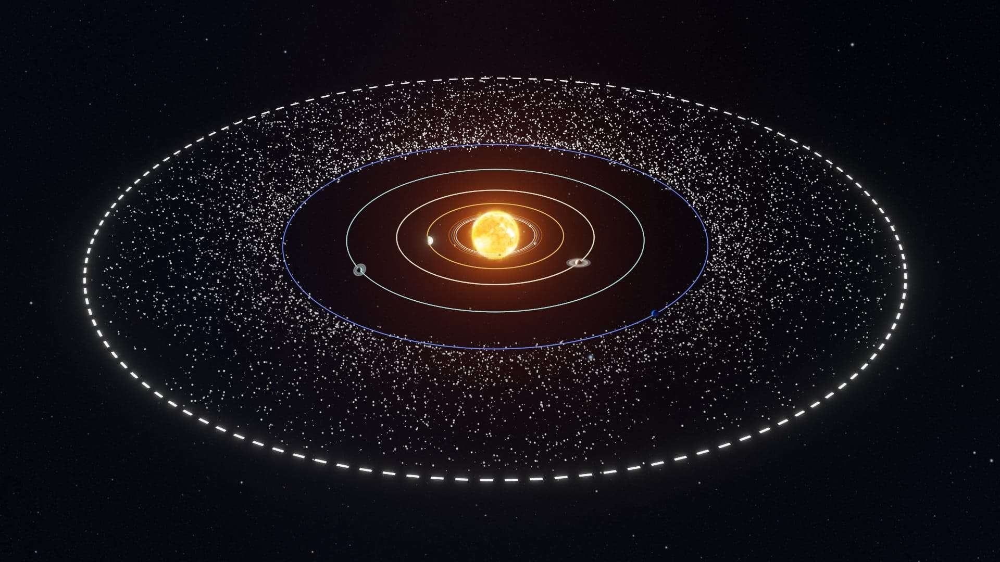
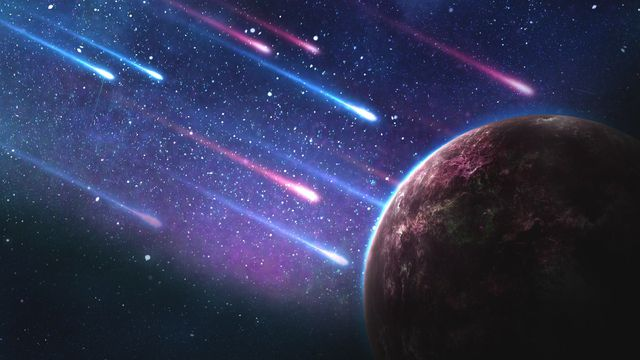
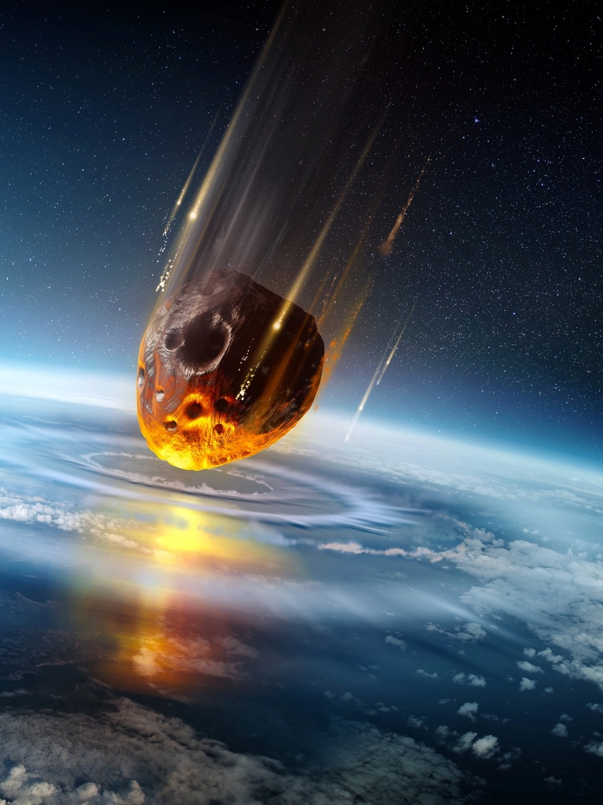

🛸 Outros Corpos Celestes Fascinantes
Além dos planetas e planetas anões, o Sistema Solar está repleto de outros objetos e regiões intrigantes que nos ajudam a entender sua formação e evolução.
Cinturão de Kuiper

O Cinturão de Kuiper é uma vasta região em forma de disco que se estende além da órbita de Netuno, a cerca de 30 a 55 Unidades Astronômicas (UA) do Sol. É habitado por milhões de corpos gelados, conhecidos como Objetos do Cinturão de Kuiper (KBOs), incluindo planetas anões como Plutão, Haumea e Makemake. Acredita-se que seja o principal reservatório de cometas de curto período.
Nuvem de Oort

A Nuvem de Oort é uma hipotética e vasta esfera de corpos gelados que se acredita envolver o Sistema Solar a uma distância imensa, estendendo-se talvez de 2.000 a 100.000 UA (ou mais) do Sol – quase um quarto do caminho até a estrela mais próxima. É considerada a fonte dos cometas de longo período. Sua existência ainda não foi observada diretamente, mas é inferida a partir das órbitas dos cometas de longo período.
Cometas

Cometas são corpos celestes relativamente pequenos, compostos principalmente por gelo (água, metano, amônia, dióxido de carbono), poeira e rochas – muitas vezes descritos como "bolas de neve sujas". Quando um cometa se aproxima do Sol em sua órbita, o calor solar faz com que seus gelos sublimem (passem diretamente de sólido para gás), criando uma atmosfera difusa chamada coma e, frequentemente, uma ou duas caudas (uma de poeira e outra de íons/plasma) que sempre apontam para longe do Sol.
Meteoroides, Meteoros e Meteoritos

Meteoroides são pequenos fragmentos de rocha, metal ou gelo no espaço, geralmente menores que asteroides (variando de grãos de poeira a objetos de alguns metros).
Quando um meteoroide entra na atmosfera da Terra (ou de outro planeta) a alta velocidade, o atrito com o ar o aquece intensamente, fazendo-o brilhar. Esse rastro de luz é chamado de meteoro, popularmente conhecido como "estrela cadente".
Se algum fragmento do meteoroide sobreviver à passagem ardente pela atmosfera e atingir o solo, ele é chamado de meteorito. Meteoritos podem fornecer informações valiosas sobre a composição de outros corpos do Sistema Solar.